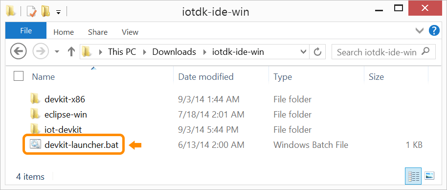
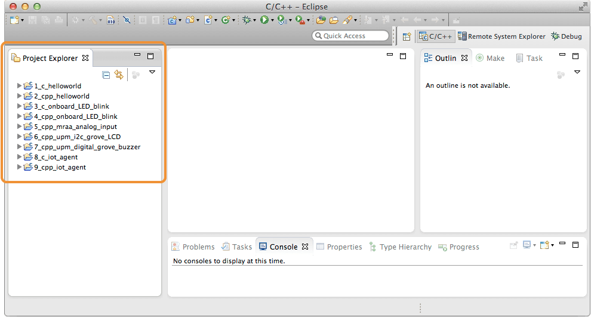

Launch Eclipse using batch file
Use devkit-launcher.bat to launch Eclipse with all the necessary Intel® IoT environment settings. Use the launcher batch file (instead of eclipse.exe) to launch Eclipse every time.
-
Once the archive file is extracted, go into the resulting iotdk-ide directory.
-
Double-click on devkit-launcher to launch the IoT dev kit Eclipse IDE.
On Windows, you may need to right-click on devkit-launcher.bat and select “Run as administrator”.

You should see a command line window appear (and quickly disappear, if you are on Windows) and the Eclipse IDE will launch using the iot-devkit workspace.
Note the example projects already loaded in the “Project Explorer” panel on the left.
